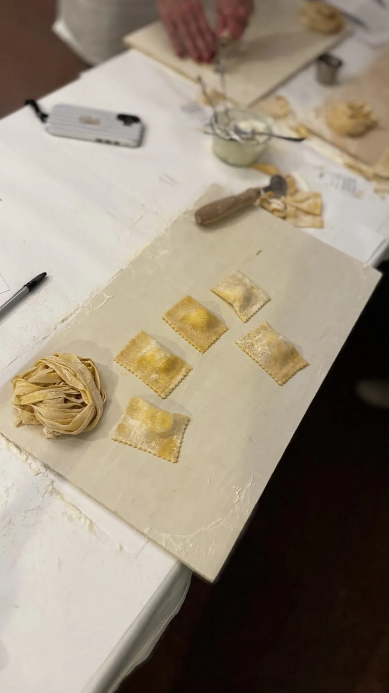

Jared Scott
On Leadership · On Life
On Correction
I Made Ravioli
In a pasta-making class in Italy, I put too much filling in my ravioli. The chef didn't lecture me. She just fixed it. On correcting people's mistakes without making them feel small.
I made ravioli in Italy, which is a sentence that by itself probably would have made my grandmother happy. What happened next probably would have caused her to take over the kitchen.
We were making pasta by hand, and the chef had already explained one very important thing about ravioli: do not overfill it. Simple enough, except I was standing there looking at ricotta cheese thinking that if some cheese is good, more cheese has to be better. Right? The chef had literally just warned us not to do this, but apparently I believed several hundred years of Italian cooking tradition had somehow failed to account for my personal theory on ricotta, so I added more.
It did not seem like an absurd amount when I was putting it in. It became absurd when I tried to close the ravioli. Now I was trying to stretch pasta around a pile of ricotta that clearly had no intention of cooperating, and then the dough started cracking. That part was my fault too. I had gotten too much flour into the egg mixture, so the edge of the pasta was a little dry. As I tried to work the ravioli closed, one side started splitting, which left me standing there in an Italian kitchen with an overstuffed ravioli made from slightly overfloured dough, trying to convince the whole thing to stay together.
I could almost see my grandmother shaking her finger at me. “Madonna mia, che hai combinato?” Literally, “My God, what have you done?” But in the hands of an Italian grandmother it carries some of the same energy as our Southern “bless your heart.” It is not really a question. She already knows what you have done. She just wants you to know that she knows, and in my case the evidence was lying right there on the table.
The chef came over and had every right to say, “I told you not to put that much filling in there,” because she had. Like, minutes earlier. Instead, she looked at my ravioli, looked at the cracked edge, and said something very close to, “It’s not a problem. We just fix it.”
Then she did. She worked the bad edge back together, turned the ugly side over and set it down. Once it was cooked, she told me, nobody would see it.
That was the whole crisis. We just kept making pasta.

I should add, for the sake of my reputation, that I also made hand rolled and hand cut linguini that day, and it came out pretty well. I have photographic evidence. But I kept thinking about that ravioli, and more specifically about how little interest the chef had in making sure I understood that she had been right.
She knew I had been told. She knew I had ignored the instruction and knew exactly why the thing was cracking apart in front of us, but none of that seemed to matter as much to her as helping me fix it. She was more interested in making the ravioli than proving a point.
That stayed with me because I have been on both sides of that moment in leadership. There are times when someone does exactly what you asked them not to do. You explained it, you warned them, and sometimes you even told them exactly what would happen. Then they do it anyway, and five minutes later there is the leadership equivalent of an overstuffed ravioli sitting on the table.
That is a tempting moment because there is a part of us that wants to say, “I told you.” Not because it fixes anything, but because it feels good to have been right. The chef could have done that with me and she would have been completely justified, but she did not seem to care about winning that little moment.
She just fixed the ravioli.
There are mistakes that need more than a quick correction. There are times when someone needs to understand the seriousness of what happened, and leadership is not pretending that everything is fine. But every mistake does not need to become a trial. Sometimes somebody is still learning. Sometimes they got a little too confident. Sometimes they genuinely believed more cheese would make the ravioli better and now they are standing there looking at the result.
The chef could have made me feel the mistake. Instead, she showed me how to recover from it.
The funny thing is that I do not remember every instruction she gave us that day, but I remember that one little moment. “It’s not a problem. We just fix it.” She corrected the work without making me the problem.
The Gordon Ramsay version probably makes better television. The Italian chef made better ravioli.
And when somebody I lead puts too much cheese in theirs, I think I know which one I would rather be.
Prego.
Jared Scott
Author · Leadership & Workforce Development